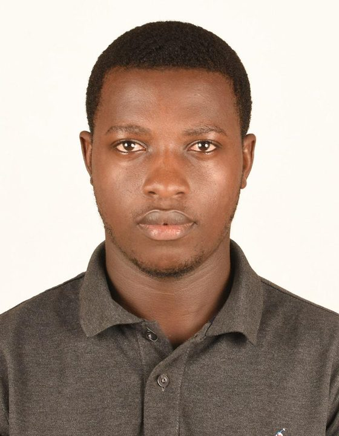
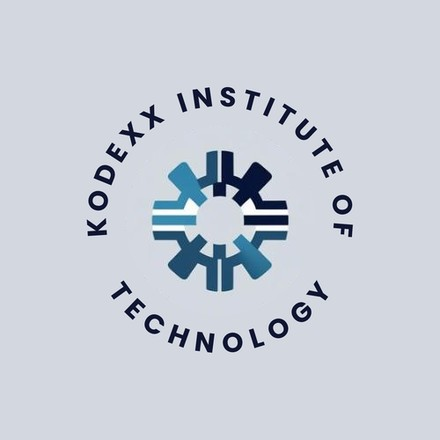

Robotics educator in Agona Swedru, Ghana
Nicholas Takyi Turkson
I teach Mathematics, Computing and Robotics to learners who rarely get to touch the technology they study. I'm building an electrical engineering foundation to take that work further.
Currently working with Mingoblox as a robotics educator. Also a certified virtual assistant from alx_africa, an AI enthusiast, and a self-taught junior web developer and vibe coder. Founder of 9teen Digitals and the upcoming Kodexx Institute of Technology.

- 105+
- learners taught Science and Computing, Grades 7 to 9
- 60
- students introduced to robotics and AI
- 5.6 to 8.3%
- rise in class averages in Science
- 2
- ventures: 9teen Digitals is live and KIT is on the way
Every learner deserves someone who meets them where they are.
I'm a robotics educator working with Mingoblox and a licensed teacher with a B.Ed (Junior High Education) in Mathematics and ICT from Foso College of Education, affiliated with the University of Cape Coast. I passed the Ghana Teachers Licensure Examination in July 2025. I'm also a certified virtual assistant from alx_africa, and the founder of Kodexx Institute of Technology and 9teen Digitals.
My action research on mathematics anxiety taught me that confidence comes before competence. That idea shapes how I teach everything, from algebra to Arduino.
I'm an AI enthusiast, and I'm interested in how digital tools, AI and robotics can close the education gap in developing regions, and in building practical, scalable solutions for Ghanaian schools.
I speak English (fluent) and Akan Twi (native). I'm also a self-taught junior web developer and vibe coder.
Two ventures, one aim: put practical technology within reach.

Founder, launching soon
Kodexx Institute of Technology (KIT)
KIT is the technology institute I'm preparing to launch online. It's built on the belief that quality tech education should reach learners wherever they are, following the accessible model of online universities.
- Online first, so learners can study from anywhere
- Focused on technology education and practical skills
- Currently in planning and preparation
Founder, open for business
9teen Digitals Services
Your documents. Our expertise. Your peace of mind.
A digital services business that makes official paperwork and everyday IT simple, fast and reliable. Payment on delivery.
Passport application aide
New applications, renewals, replacements and tracking.
Birth certificate services
New applications, late registration, replacements and name corrections.
BECE and WASSCE checkers
Result checking and verification assistance.
Laptops and IT services
Laptop sales, repairs, upgrades, software installation and spare parts.
From classrooms and committees to a robotics lab on a school table.
-
Apr 2025 to Mar 2026
Computing and Science Educator, National Service
Jukwa Catholic DA Basic School, Jukwa
- Taught Computing to 85+ learners in Grades 7 and 8, with measurable gains in keyboarding and software skills.
- Worked with Mingoblox as school representative and robotics educator, running weekly mBlock and Arduino Uno workshops on its robotics and AI programme for 60 students.
- Took over the full Science curriculum for Grades 7 to 9 (105+ learners) during a staff vacancy, reaching 85% syllabus coverage and lifting class averages by 5.6%, 7.6% and 8.3%.
- Designed a Digital Literacy module that prepares post-BECE students for secondary school ICT.
-
Jan to Apr 2024
Student Teacher and Lead Mentee
Assin Nkran/Ngresi A Basic School
- Taught daily Mathematics and ICT lessons to Basic Seven learners and led my teaching-practice group through peer observation and weekly reflection.
- Ran a guided-practice intervention that reduced mathematics anxiety and raised participation.
-
Feb 2021 to Jul 2022
Interim Secretary, then Deputy PRO
iTech Society, Foso College of Education
- Managed records and minutes for 120+ members and automated them in Google Workspace, cutting document retrieval time by 40%.
- Led outreach that made technology approachable for non-technical students.
-
Jul 2019 to Nov 2022
Interim Vice President
Pre-Alumni, EMCYDC, Agona Swedru
- Supervised an executive board of 8 and delivered 3 community projects that reached 150+ young people.
Education and credentials
Awarded Jan 2025
B.Ed (Junior High Education) in Mathematics and ICT
Foso College of Education, University of Cape Coast affiliate. Studies completed Oct 14, 2024.
Jul 2025
Ghana Teachers Licensure Examination
National Teaching Council. Licensed to teach in Ghana.
2024
Certificate in Executive Virtual Assistance
alx_africa, Ghana. View certificate
Training projects
Projects I completed during my alx_africa virtual assistant training.
View projects folder2016 to 2019
West African Senior School Certificate Examination (WASSCE), General Arts
Mozano Senior High School.
Research and projects
Reducing mathematics anxiety in Basic Seven learners
Undergraduate action research at Assin Nkran/Ngresi A Basic School. Scaffolded steps, visual aids and low-stakes practice improved learner confidence and participation. It convinced me that emotional safety matters as much as academic rigour.
Robotics and AI pilot curriculum
Working with Mingoblox, I introduced 60 students to robotics and AI fundamentals using mBlock and Arduino Uno. The pilot showed that hands-on, project-based learning sparks STEM interest even where resources are limited.
Skills and tools
Robotics and STEM
- Arduino Uno
- mBlock
- Block-based coding
- Robotics kits
- STEM workshops
Teaching
- Mathematics
- ICT and Computing
- Curriculum design
- Lesson planning
- Differentiated instruction
- Progress tracking
Virtual assistance
- Calendar management
- Email management
- Scheduling
- Research
- Data entry
- Reports
- Meeting minutes
- SOPs
Productivity tools
- Google Workspace
- Microsoft 365
- Canva
- Trello
- Asana
- Monday.com
- Zapier
- Zoom
- Slack
- Teams
- Otter.ai
Web and systems
- Self-taught junior web developer
- HTML
- Tailwind CSS
- JavaScript
- Web design
- SQL
- Databases
- Networking
- PC maintenance
AI and vibe coding
- AI enthusiast
- Self-taught vibe coder
- Prompt engineering
- ChatGPT
- Gemini
- Claude
What's next: engineering depth and graduate study.
Electrical engineering
Robotics showed me I can teach circuits and code to a classroom. I now want the engineering depth to design, build and repair the hardware myself, from electronics and embedded systems to power. I'm pursuing electrical engineering as a vocation that sits alongside my teaching credentials.
Master's in education
I'm open to master's programmes in education-related fields such as STEM education, educational technology, and curriculum and instruction. My research question: how can AI and robotics improve learning in under-resourced schools?
I'm also open to virtual assistant work, from calendar and inbox management to research, records and reporting.
If you offer scholarships, supervision, mentoring or research partnerships in these areas, I'd like to hear from you.